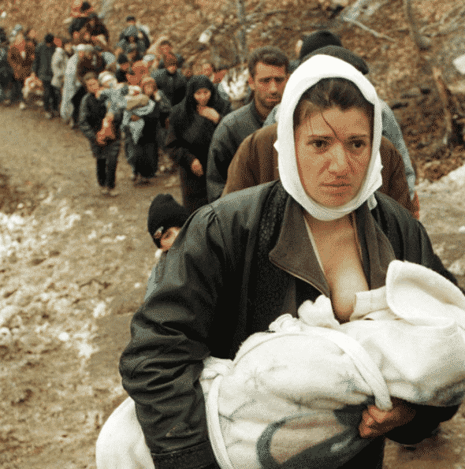
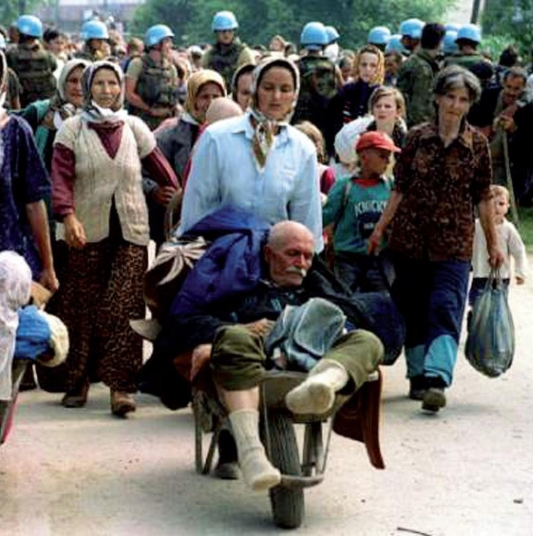
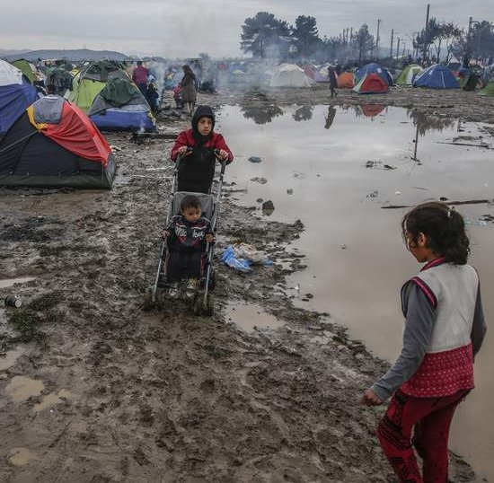
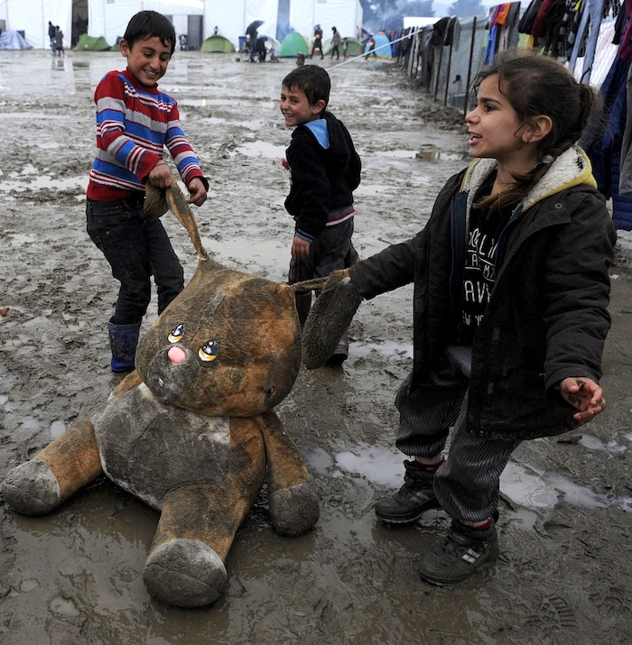
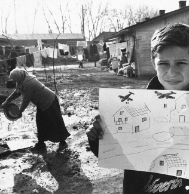
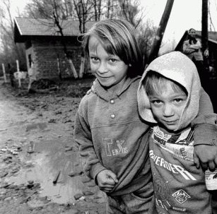

¡Has capturado un momento! 📷
*
Diario en un campo de barro

Esta es una historia con todos los ingredientes como para ser real, tanto por los protagonistas como por los escenarios. En algunos encuentros me han preguntado por qué el campo de refugiados es "de barro". Entre los miles de fotos que recuerdo de los campos de refugiados durante la guerra de la antigua Yugoslavia, el barro estaba presente. Tiene un valor simbólico también, relacionado con lo que sucede, con Nushi, pero esta es otra historia.
¿Y por qué "un diario"? Ese era un desafío: escribir un diario de una niña de quince años; en un diario no se habla de lo real, pesa más lo que se siente.
(Lamento no poder dar los créditos de las fotos que aparecen abajo, que pido prestadas a los autores. Gracias por el préstamo.)





